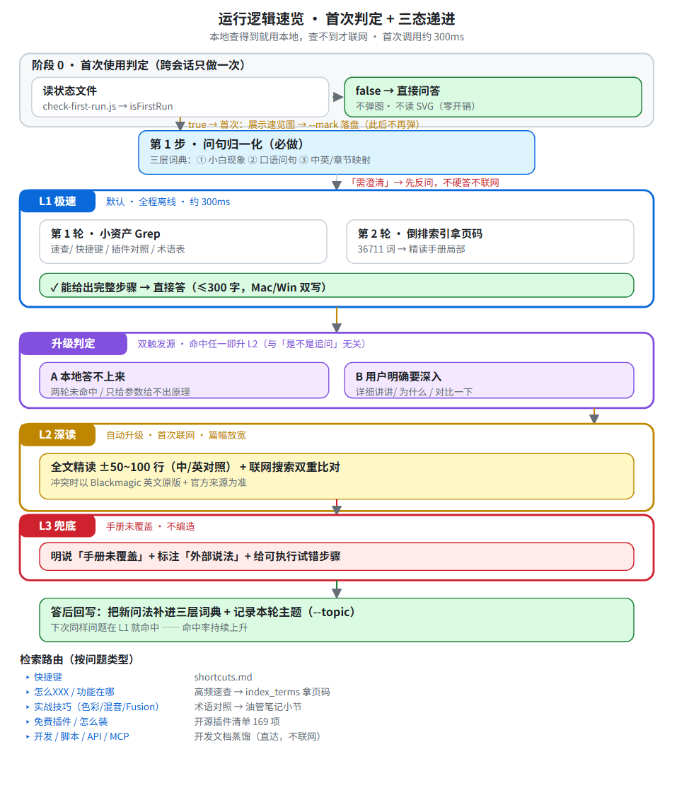

① 三态递进检索
L1 极速（默认）
本地检索，不联网
命中即答，零开场白
命中即答，零开场白
L2 深读
本地答不上来
或用户明确要深入
或用户明确要深入
L3 兜底
仍不确定时
如实说明，不编造
如实说明，不编造
② 命中率实测（脚本可复跑）
| 测试集 | 命中 | 说明 |
|---|---|---|
| A 术语问句 | 37/37 | 规范术语，如「色彩管理」 |
| B 白话问句 | 38/38 | 如「声音忽大忽小怎么调」 |
| 真实提问 | 7/7 | 来自实际使用记录 |
三层词典 454 条：小白现象 108 · 口语问句 212 · 实战术语 113 · 实战路由 21
③ 内置离线浏览器 · 六个 tab
| tab | 内容 | 数据量 |
|---|---|---|
| ⌨ 快捷键速查 | 按模块分组，搜索 + 筛选，Mac/Win 双写 | 818 条 / 14 模块 |
| ⚡ 高频速查 | 最常用操作，Mac / Win 双列对照 | 128 条 / 13 类 |
| 🔍 功能检索 | 全文搜索，可切中文 / English 原版 | 4351 页 × 中英 |
| 🧩 内置插件对照 | Resolve FX + Fairlight，标 Studio 专属 | 109 条 |
| 🧬 开源插件 | GitHub 免费开源，分类 / 平台 / Star 排序 | 169 项 · 可更新 |
| 🛠 官方开发文档 | Scripting API · MCP · Workflow Integration | 62 类 / 410 方法 |
数据来源：DaVinci Resolve 21.1 官方参考手册（V2 汉化，4351 页），歧义处以英文原版为准。插件为 GitHub 开源项目索引，功能与授权以原仓库为准。
④ 运行逻辑（完整流程图）

离线优先：默认不联网，本地能答就绝不外查
三态收敛：同一问题无论问几次都走同一路径
维护闭环：未命中词自动进测试集，命中率随使用上升
覆盖范围：剪辑 · 调色 · 音频 · Fusion · 交付 全流程